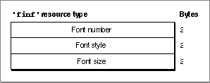

Legacy Document
Important: The information in this document is obsolete and should not be used for new development.
Important: The information in this document is obsolete and should not be used for new development.


The Font Information Resource
The Dialog Manager uses the default application font when it displays the static text items in your control panel. To specify a different font, create a font information resource of type'finf'. A font information resource must have a resource ID of -4049. This is an optional resource for control panels. Figure 8-18 shows the structure of a compiled font information resource.Figure 8-18 Structure of a compiled font information (
'finf') resource A font information resource contains three 2-byte words. A compiled version of a rectangle positions resource contains these elements:
For more information about the font information resource, see"Specifying the Font of Text in a Control Panel" on page 8-23.
- Font ID number. The Finder sets the graphics port's
txFontfield to this value.- Font style. The Finder sets the graphics port's
txFacefield to this style.- Font size. The Finder sets the graphics port's
txSizefield to this size.
- Note
- The Control Panel desk accessory in System 6 does not support font information resources. If your control panel can run in System 6 and you want to specify a different font, see "Defining Text in a Control Panel as User Items" on page 8-24.